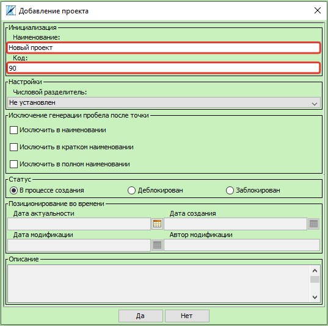
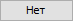
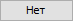

Инструкции по работе с объектами системы
Справочник проектов
В процессе подготовки структуры данных первой сущностью, которую необходимо создать, является проект.
Вызвать форму «Справочник проектов»  можно из пункта меню Объекты системы.
можно из пункта меню Объекты системы.
Attention
Кнопка на панели инструментов, вызывает форму «Выбор проектов», а не форму «Справочник проектов»

Создание проекта
На форме «Справочник проектов» нажать кнопку «Добавить»  , либо сочетание клавиш Ctrl+N.
, либо сочетание клавиш Ctrl+N.
На открывшейся форме «Добавление проекта» обязательными для заполнения являются поля «Наименование» и «Код».
Также возможно:
установить числовой разделитель целой и дробной части числовых значений признаков проекта;
исключить генерацию пробела после точки в проекте;
изменить статус проекта;
указать дату актуальности проекта;
добавить описание.
Поля «Дата создания», «Дата модификации» и «Автор модификации» заполняются автоматически.
Для сохранения изменений нажать кнопку  , для выхода из формы .
, для выхода из формы .
Новый проект можно увидеть в списке проектов на форме «Справочник проектов».

Редактирование проекта
Параметры ранее созданного проекта можно изменить на форме «Редактирование проекта», которую можно вызвать нажатием на кнопку «Редактировать»  , либо сочетанием клавиш Ctrl+R на форме «Справочник проектов», предварительно выделив строку с проектом.
, либо сочетанием клавиш Ctrl+R на форме «Справочник проектов», предварительно выделив строку с проектом.

На открывшейся форме «Редактирование проекта» возможно:
изменить наименование проекта;
изменить код проекта;
установить числовой разделитель целой и дробной части числовых значений признаков проекта;
исключить генерацию пробела после точки в проекте;
изменить статус проекта;
указать дату актуальности проекта;
добавить описание.
Для сохранения изменений нажать кнопку , для выхода из формы .
Удаление проекта
Для логического удаления проекта необходимо нажать на кнопку «Удалить»  либо клавишу Delete на форме «Справочник проектов», предварительно выделив строку с проектом.
либо клавишу Delete на форме «Справочник проектов», предварительно выделив строку с проектом.
В открывшемся окне «Удаление проекта» нажать кнопку для логического удаления проекта, кнопку для выхода из формы.
Note
Альтернативный способ логического удаления доступен на форме «Редактирование проекта». Для этого необходимо изменить статус на «Заблокирован».
Для физического удаления проекта необходимо выбрать проекты со статусом 2 и нажать на кнопку «Удалить» либо клавишу Delete на форме «Справочник проектов», предварительно выделив строку с проектом.

Если проект содержит объекты, то появится предупреждение:

Для физического удаления проекта необходимо физически удалить все объекты данного проекта. После этого повторить процедуру удаления проекта. В открывшемся окне «Удаление проекта» нажать кнопку для физического удаления проекта, кнопку для выхода из формы.
Attention
При удалении проекта будут удалены шаблоны проекта, клиентские системы, проектное представление и проектные значения признаков. Восстановить данные объекты системы с помощью инструментов Классификатор 5.0 после физического удаления проекта невозможно.
Выбор проектов
Для дальнейшей работы с проектом необходимо подключить данный проект для отображения на форме «Выбор проектов». Вызвать форму «Выбор проектов» можно из пункта меню «Подключение».

Либо кнопкой «Выбор проектов» на панели инструментов.

Справочник клиентских систем
- Клиентская система (КС)
Функциональный параметр, используемый в процессе реализации проектной деятельности при загрузке проектных данных, необходим для отображения данных по отдельным заводам, филиалам и т.д.
По типу КС делятся на исторические и целевые. Каждая историческая КС привязана к отдельному рабочему источнику данных (дочерние компании, филиалы, предприятия), а целевая КС отображает агрегированные данные с той перспективой, что все предприятия, участвующие в проекте будут пользоваться представленными в целевой КС данными.
Note
Для каждого проекта создается минимум 2 КС: историческая и целевая . Историческая КС создается для каждого источника данных. Целевая система, как правило, создается одна. Наименование формируется с префиксом ЦС. Например, ЦС ТН.
Вызвать форму «Клиентская система»  можно из пункта меню Объекты системы.
можно из пункта меню Объекты системы.
Либо на форме «Справочник проектов» нажать на кнопку «Клиентская система» , предварительно выделив строку с проектом.

Создание КС
На форме «Справочник клиентских систем» нажать кнопку «Добавить» , либо сочетание клавиш Ctrl+N.
На открывшейся форме «Добавление клиентской системы» обязательными для заполнения являются поля «Наименование», «Код», «Проект», «Тип клиентской системы», «Статус». Также возможно указать «Дату актуальности» проекта. Поля «Дата создания», «Дата модификации» и «Автор модификации» заполняются автоматически.
Note
Код клиентских систем используется для внутреннего упорядочивания КС. Целевую КС лучше всего создавать с кодом 99. Таким образом, можно избежать исправления кодов из-за появления новых КС в процессе проработки и добиться выделения целевой КС как конечной КС.
Для сохранения изменений нажать кнопку , для выхода из формы .
Новую КС можно увидеть в списке клиентских систем на форме «Справочник клиентских систем». .. image:: _static/screens/objects16.png
Attention
Для дальнейшей работы с созданной КС необходимо подключить для отображения данную КС на форме «Выбор проектов».
Редактирование КС
Параметры ранее созданной клиентской системы можно изменить на форме «Редактирование клиентской системы», которую можно вызвать нажатием на кнопку «Редактировать» , либо сочетанием клавиш Ctrl+R на форме «Справочник клиентских систем», предварительно выделив строку с КС.